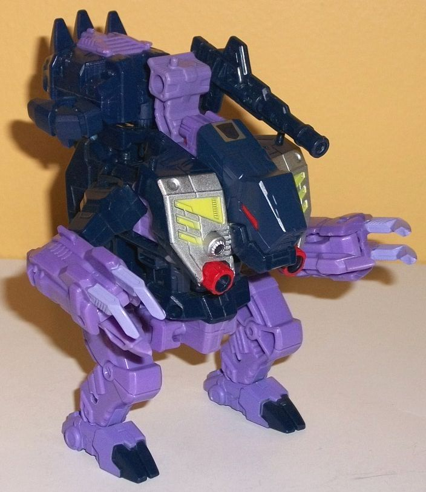
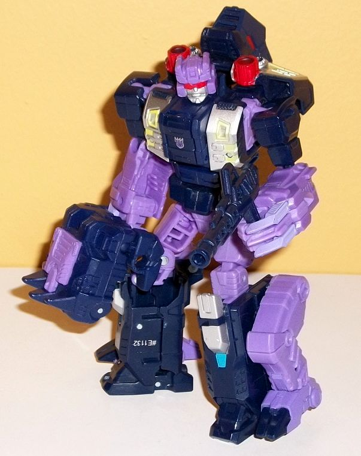
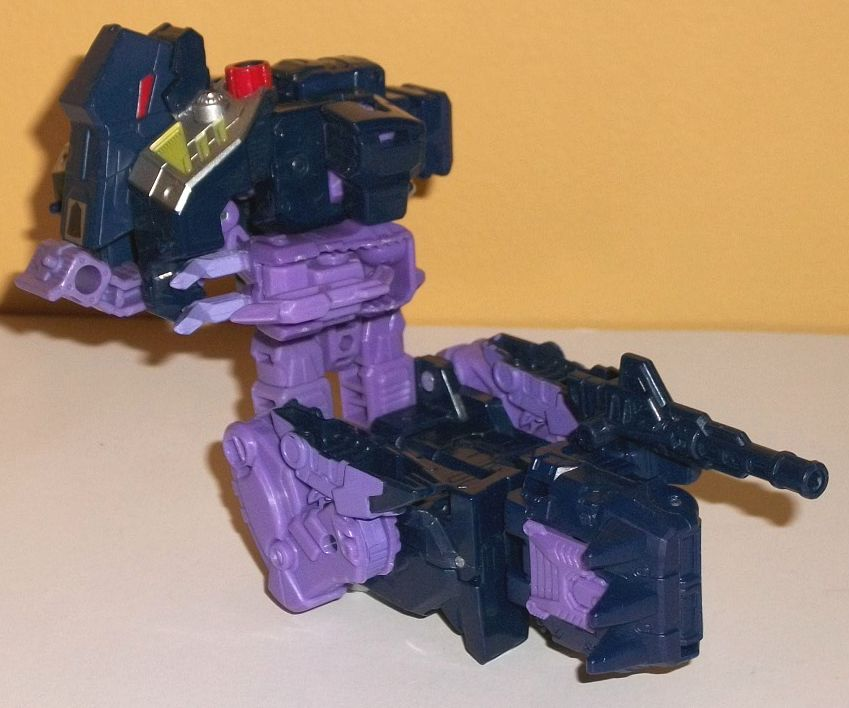
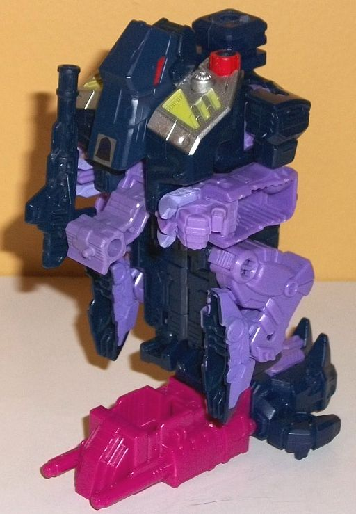

Allegiance
: Decepticon
Size
: Deluxe
Difficulty of Transformation to Robot:
Easy
Difficulty of Transformation to Leg
:
Easy
Difficulty of Transformation to Arm
:
Very Easy
Color Scheme
: Very dark dull navy
blue, moderately light purple, and some silver, red, light blue, and pale
yellow
Rating:
7.5


Blot's alternate mode
is kept pretty G1-accurate, in that he's a little squat upright monster
with a face that looks more like a nose with eyes. They modernized Blot
a little bit with having a more obvious jaw molded into the face this time
around (though it doesn't open), but this is definitely the most odd (or,
you could say, unique) alt mode among the various Terrorcons. Blot has
some vents molded into the front of his large nose, and some fairly straightforward
robotic details for his beast chest, which is on the sides of his head
as opposed to below it. He barely has a waist at all, with his legs right
up there around the bottom of his stomach. His three-clawed arms on the
side look great, though he's got a BIG backpack in this mode-- as opposed
to most deluxe combiner members where the legs compress in the alt mode,
for Blot they just swivel around and connect on the back, with the upper
robot legs below Blot's main body in this mode. From a frontal view this
doesn't look that bad, but once you start to turn him to the side you can
see just what a big backpack it is-- and it keeps him a bit back-heavy,
as well. It's definitely the worst part about this mode, for sure. There's
also a little bit that sticks above Blot's head that has two ports in it--
one for a rather long-barreled blaster, and the other for... *sigh*...
his Prime Armor piece, if you want, but it REALLY sticks out there. I prefer
to just plug it in the hole in between his feet and have it hang off the
back end that way, so it's not quite as obnoxious. As for the color scheme,
Blot's main body is mostly a very dark, flat navy blue, while his appendages
are a fairly light purple. Both main colors contrast and complement each
other quite well, and it's a pretty good basic color scheme, although perhaps
adding in another main color would've helped a bit more. The main paint
apps in this mode are the large silver panels on his chest, with some pale
yellow and red details on them. There's a Decepticon emblem sticker on
the top of the head, and although it looks like his toes are painted dark
blue, in actuality the rest of his feet are painted light purple-- that
seems like an odd use of paint, there. Anyways, I would've appreciated
some silver claws or something, but otherwise his colors are broken up
pretty well in this mode. The mold detailing isn't bad, but is largely
fairly generic, with some basic angular details on his claws and feet,
some basic shapes on his chest, and some armor-like details on his legs.
Again, it's not bad, but it's not amazing, either. For articulation in
this mode, Blot can move at the shoulders, elbows, inwards a bit at the
thumb-claw on each hand (though doing so reveals his robot fist a bit),
movement at the hips (at two points), and slightly forward-and-back movement
at the ankles. So it's pretty decent, but a bit more movement in the legs
would've been appreciated. One last note here-- on the top of each side
of his chest, Blot has a little peg for a Titan/Prime Master to stand on,
as well as an additional one on the top of his turret piece.
Blot's transformation
is quite easy-- flip in the thumb on each claw-hand to make them full-fledged
robot fists with Wolverine-like claws on the back of each hand; unfold
the robot legs from behind the beast mode and rotate them down, pegging
in the beast legs onto the side of the lower legs while you do so; and
then just rotate the turret and beast head & chest behind the back,
and you're done. The end result is a pretty decently-proportioned robot
mode, though there's some obvious pieces of kibble. As with most of the
Terrorcons, the beast legs just hang off the side of the lower robot legs
unceremoniously, not even trying to be hidden. (It's here you can see some
minor part-sharing with his fellow Terrorcon
Rippersnapper
,
with the same parts used for the upper legs and waist.) The beast head
and chest stick up and out a bit from behind Blot's upper back, though
at they don't get in the way of articulation all that much, and certainly
could be worse, I guess. The turret-piece is not solidly behind Blot's
middle back, which makes storage of his Prime Armor a better option in
this mode (though like all PotP deluxes, you can fit the Prime armor onto
Blot's chest in this mode-- and again like all PotP deluxes, it looks too
bulky and like he's got a big hand on his chest, 'cause he does). The arms
look great, though, with those Wolverine-like claws making him look rather
savage and unique here-- though the downside to this is that his lower
arms are pretty darned hollow. The chest is prety solid, with some basic,
symmetrical details along the sides, with the center portion mostly occupied
by his combiner port in his waist. The headsculpt is great. For the most
part it looks rather par-for-the-course for a G1 Decepticon combiner head,
with a fairly blocky head with small, curved antennae on the side, little
vents on the sides, and a little rectangular bit in the center of his forehead--
heck, now that I look at it, Blot's helmet looks a LOT like G1 Soundwave's...
but the face is what makes this headsculpt stand out. He's got a visor
slightly segmented in two so you can see some definite "eyes" there, but
his face looks miserable, with an extra-long frown line, and with his large
lower lip, it almost makes him look a bit frog-like at the mouth and chin.
Which makes sense, as he's a disgusting 'Con. Beyond these details and
a few basic details on the lower legs, there's not much new detail-wise
in this mode, given how many parts are visible in both modes. As for the
color scheme, there's more light purple visible in this mode, but the colors
are still broken up pretty well, with a lot of dark blue still visible,
and some silver paint on the kneecaps and sides of the chest; some light
yellow on a few of those simple details on the chest; and a little bit
of light blue below his kneecaps. I quite like this light blue, and wish
it was used a little more on the toy to help vary up the color scheme a
bit more, even though what he already has is still pretty decent. There's
also some silver on his face and red on his visor. For articulation in
this mode, Blot can move at the neck, shoulders (at two points), elbows,
rotation at the waist, movement at the hips (at two points), and knees.
Thus, given that he's pretty balanced, you can get him into a lot of cool
poses.


For Blot's arm mode,
take his robot mode and rotate the arms backwards at the elbows, transforming
the fist portions back into claws, and then peg them into little slots
on the sides of the waist. Then take the robot head and rotate it back
and the combiner port out to the side, while you combine back together
his two legs to form the lower arm, and peg in his Prime Armor piece into
the bottom of his feet to form the arm's hand. It's a pretty straightforward
transformation. I rather like how the shoulder/upper arm area looks-- the
Blot beast head forms a nice silouhette against the shoulder, and from
a front angle, the claws don't poke out much from the main body, even if
you can easily see they're partially hollow from this angle. The lower
arm is definitely weaker, however, as the beast legs are rather blatantly
on the sides, and stick out in front of the robot legs which form the main
body of the lower portion of the arm mode. It seems like the beast legs
should be able to fold back a bit more, but they can't. As with most other
PotP arm modes, in this mode Blot can move at the shoulder (at two points),
elbow (at two or three points, depending upon how you orient the lower
arm), rotation at the wrist, and movement at both thumbs and at the base
of the fingers (all four fingers as one piece).
Unlike most leg modes
for combiners-- which are more a variation of the beast mode-- Blot's leg
mode is still closer to his robot mode than his beast mode. Essentially
keep the upper body the same configuration as that of the arm mode (though
the robot fists are out in this mode for some reason), but compress the
legs more like the beast mode, and then don't fold them back-- instead
just leave them down in the robot mode configruation. Then just plug in
the Prime Armor foot pieces and you're set. What is odd about this leg
mode, however, is that it appears to be facing the wrong way-- that is,
the back of the robot mode is facing forward, whereas things might look
a bit better if you turned it around. HOWEVER, if you do this, then it
doesn't line up well enough with most other PotP leg modes, so to keep
things relatively symmetrical you need to keep the back pointed forward.
Although the beast head/chest bit serves as a nice "kneecap", the rest
of the leg mode looks rather bad in this manner-- the hands quite obviously
point forward, and the beast legs are pretty obvious sticking out on the
sides. Worst of all, the main "body" of this mode is back too far from
the kneecap & arms visually, leading to making the leg mode look off-balance
by itself, even though it's not. The little back-mounted double-gun mount
from Blot's beast mode also sticks out rather unceremoniously from the
front of this mode. As with basically every PotP leg mode, in this mode
Blot can move at the the knee (at two points) and has rotation and a little
tilting at the ankle.
Blot has a pretty good, well-proportioned mode, is well-articulated, and has a nice color scheme, but his beast mode doesn't really look like much (beyond those cool claws), and has a very large backpack. His arm mode is mostly average, and his leg mode is outright weird. Though Blot certainly isn't a bad toy by any means, given how similar his two modes are and the oddities I've mentioned-- as well as some of the downsides all the deluxe Terrorcons have, like obvious beast legs in robot mode-- he's my least favorite of the PotP Terrorcons. They really needed to update his beast mode more...
Review by Beastbot